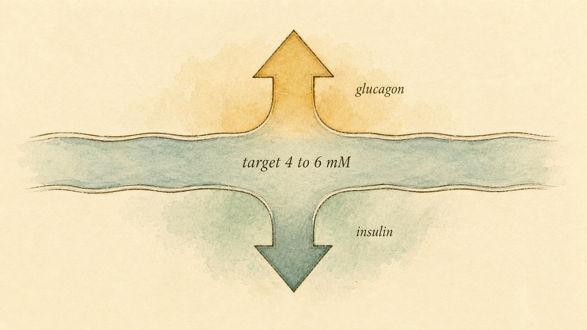
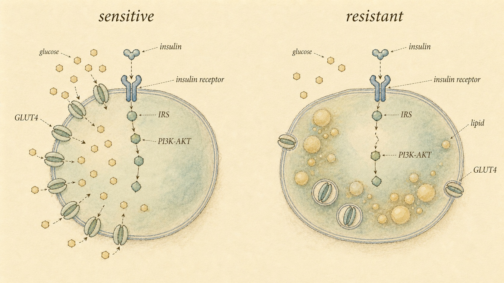

The Fuel Manager: Insulin and Blood Sugar
How two opposing hormones hold your blood glucose in a narrow band, why "resistance" almost never means "not enough insulin," and where understanding stops and clinical care begins.
You ate breakfast a couple of hours ago. Right now, without you thinking about it, a teaspoon and a half of sugar is dissolved in your entire bloodstream. Not a tablespoon. Not a half-cup. Roughly four to six millimoles per liter, which works out to about four grams of glucose total across five liters of blood. That is the whole budget. Pour a can of soda into that system unmanaged and you would more than double it within minutes.
And yet you do not double it, because something is watching the level the way a thermostat watches a room. When glucose climbs, a hormone goes out to pull it back down. When glucose sags, a different hormone goes out to push it back up. The two of them argue all day long, and the result of the argument is the flat, boring, life-sustaining line we call normal blood sugar. This chapter is about that argument, the two hormones having it, and the single most misunderstood word in all of metabolism: resistance.
A quick word before we start, because it shapes how you should read everything that follows. This chapter touches diabetes and prediabetes, two conditions that get diagnosed and managed by clinicians. You are here as a learner, not as someone's doctor. So the goal is not to turn you into a person who reads glucose numbers and hands out verdicts. The goal is to give you a mechanism-level picture clear enough that you can think straight, follow a real conversation about metabolic health, and recognize the moment a situation has moved past general education and into territory that belongs to a qualified clinician. Keep that frame in your back pocket. We will come back to it explicitly near the end.
The setpoint, and why it is so tight
In Chapter 1 you learned the logic of a setpoint: the body picks a target value for some variable and uses feedback loops to defend it. Blood glucose is the cleanest example in the whole endocrine system. The defended band is narrow, roughly 4 to 6 millimolar in a healthy fasted person (Röder et al., 2016). Step outside it in either direction and you have a problem.
Too low is the more urgent emergency. Your brain runs almost entirely on glucose and cannot store its own fuel, so a glucose level that drops too far causes confusion, then unconsciousness, then death, fast. Too high is the slower, grinding kind of damage. Chronically elevated glucose glycates proteins, stiffens blood vessels, and injures nerves and kidneys over years. So the body is not being fussy when it holds the line at a teaspoon and a half. It is managing a fuel that is simultaneously essential and corrosive, like keeping exactly enough gasoline in an open bucket to run the engine without burning the garage down.
It is worth pausing on just how good this regulation is. A healthy person can eat a large plate of pasta, absorb a flood of glucose from the gut over the next hour, and still see their blood glucose peak only modestly before sliding back to baseline within two or three hours. The system absorbed a shock that, in raw arithmetic, should have swamped the four-gram budget several times over, and it barely flinched. That is not luck. That is the fast, layered response of a control system built to handle exactly this kind of surge many times a day for a lifetime.
To defend a setpoint you need at least two opposing forces, the same way a thermostat needs both a furnace and an air conditioner. A system with only a furnace can warm a cold room but can never cool a hot one. Glucose control works the same way. Insulin is the force that lowers glucose. Glucagon is the force that raises it. Neither one alone could hold a setpoint. Together they can. And notice the asymmetry the body builds in: it has many redundant, overlapping ways to raise a falling glucose (glucagon, adrenaline, cortisol, growth hormone all push it up) but essentially one hormone to lower a rising one. That tells you which direction the body fears most. Losing the brain to fuel starvation is the catastrophe evolution optimized against.

Insulin: the "store it" signal
Insulin is a small peptide hormone made by the beta cells of the pancreatic islets. Recall from Chapter 1 that peptide hormones are water-soluble, cannot cross the cell membrane, and therefore must dock on receptors at the cell surface and pass their message inward through a relay. Insulin is the textbook case, and the relay it triggers is worth knowing in a little detail, because the whole back half of this chapter is about that relay breaking down.
When you eat, glucose absorbed from the gut raises blood sugar. Beta cells sense the rise and release insulin into the blood. Insulin then circulates and binds the insulin receptor, a surface receptor with built-in enzyme activity. Binding makes the receptor phosphorylate itself and then phosphorylate a family of relay proteins called insulin receptor substrates (IRS). That kicks off the PI3K-AKT pathway, and one of AKT's most important jobs is to trigger the movement of glucose transporters, specifically GLUT4, from inside the cell up to the surface (Petersen & Shulman, 2018; Pei et al., 2022).
Here is the part worth slowing down on. In muscle and fat, the door that lets glucose into the cell is mostly kept locked until insulin says otherwise. GLUT4 transporters sit in little internal storage vesicles. Insulin's signal is what brings them to the surface and inserts them into the membrane, which is when glucose can finally flood in. No insulin signal, no GLUT4 at the door, very little glucose uptake in those tissues. Contrast that with your brain and your liver, whose glucose transporters (GLUT1, GLUT2, GLUT3) sit at the surface all the time and pull glucose in regardless of insulin. That distinction matters: the tissues that hoard fuel for later are the ones that gate their doors behind insulin, while the tissues that must never run out keep their doors open. Insulin is not a master switch for all glucose everywhere. It is specifically the permission slip for storage tissue.
This is why insulin is fairly described as the master "store it and use it" signal. It does several things at once:
- It opens muscle and fat cells to glucose uptake by translocating GLUT4.
- It tells the liver and muscle to take incoming glucose and lock it away as glycogen, a branched storage polymer of glucose.
- It tells fat tissue to store incoming energy as triglyceride and to stop releasing fat.
- It tells the liver to stop manufacturing and dumping new glucose, because right now there is plenty.
Notice the theme. Insulin is the hormone of the fed state. Its whole message is: fuel just arrived, take it out of circulation, put it where it belongs. Every one of those four actions points the same direction, which is what makes insulin such a coherent signal. It does not micromanage; it announces a state, "we just ate," and every tissue that hears it shifts into storage mode at once.
Glucagon: the "release it" signal
Glucagon is insulin's opposite number, also a peptide, made by the alpha cells sitting right next door in the same islets. Where insulin says store, glucagon says release. When you have not eaten for a while and glucose starts to fall, alpha cells secrete glucagon, and glucagon travels straight to the liver with a simple instruction: make glucose available, now (Jiang & Zhang, 2003).
The liver answers in two ways. First, glycogenolysis: it breaks down its stored glycogen back into glucose and releases it into the blood. This is the fast response, the savings account you can withdraw from immediately. Second, gluconeogenesis: it manufactures brand-new glucose from non-carbohydrate raw materials such as amino acids and glycerol. This is the slower, more deliberate response for longer fasts. At the same time, glucagon suppresses the storage pathways, glycogen synthesis and glycolysis, so the liver is not building and breaking at once (Jiang & Zhang, 2003).
So glucagon is the hormone of the fasted state. Overnight, between meals, during a long gap, glucagon is what keeps that teaspoon and a half of sugar topped up so your brain never browns out. The liver, under glucagon's direction, is essentially running a small glucose factory and a glucose warehouse on your behalf while you sleep. When you wake and have not eaten, the fact that your glucose is still comfortably in range is glucagon's quiet accomplishment. It is not the absence of a meal keeping you steady; it is the presence of a hormone actively managing the shortfall.
There is a clinical footnote worth flagging here, because it connects glucagon to something you have probably heard of. In type 2 diabetes, glucagon is often not suppressed the way it should be after a meal. The alpha cells keep signaling "release glucose" even while blood sugar is high, so the liver keeps pouring glucose into a bloodstream that already has too much. That is a genuine part of the disordered picture, and it is a reminder that blood sugar problems are rarely about a single hormone. They are usually about the balance between two, which is exactly where we are heading next. To be clear, spotting that pattern in a real person is a clinician's job with real labs, not something you diagnose from the outside. We flag it here only so the mechanism makes sense.
The ratio, not the absolute
Here is a point that trips people up, and it matters for everything that follows. Your blood glucose is not set by insulin alone or glucagon alone. It is set by the insulin-to-glucagon ratio, the balance of the two signals reaching the liver (Jiang & Zhang, 2003; Röder et al., 2016).
After a meal, insulin is high and glucagon is low, so the ratio swings toward storage, and the liver soaks up glucose and builds glycogen. In a fast, insulin is low and glucagon is high, so the ratio swings toward release, and the liver hands glucose back out. The liver does not need a separate phone call telling it whether you ate. It reads the ratio of the two hormones in the blood passing through it and acts accordingly. This is opposing-hormone control in its purest form, and you will see the same architecture again with calcium, with appetite, with energy balance. Learn the shape here and the rest of the course gets easier.
The ratio framing also explains something that a single-hormone story cannot. It is possible to have a normal amount of insulin and still get the wrong behavior out of the liver if glucagon is disproportionately high, and vice versa. The liver is not asking "how much insulin is there." It is asking "which signal is winning." That is a more honest model of how the system actually decides, and it is why fixating on one hormone number, insulin or glucagon, in isolation tends to mislead.
Where the fuel actually goes
When insulin says "store it," there are two destinations, and understanding the difference between them removes a lot of moralizing nonsense about food. Glucose pulled out of the blood goes either into glycogen or, when glycogen is full, into fat. Both are normal, managed storage. Neither is a verdict on your character.
Glycogen: the limited, fast-access tank
The first destination is glycogen, stored in two main places. The liver holds roughly 100 grams of glycogen, and crucially the liver can release that glucose back into the blood to feed the whole body, because the liver has the enzyme to do so. Skeletal muscle holds more, on the order of 300 to 500 grams depending on your size and training, but muscle glycogen is selfish. Muscle lacks the enzyme (glucose-6-phosphatase) to export glucose back to the bloodstream, so muscle glycogen feeds only that muscle. It is a private fuel reserve, not a public one.
That single enzymatic difference explains a lot of downstream physiology. Because liver glycogen is public, it is the reserve that defends whole-body blood sugar overnight, and it is also the reserve that runs low first during a prolonged fast, which is when gluconeogenesis has to take over. Because muscle glycogen is private, filling it up is metabolically "safe" in the sense that it does not raise blood sugar for anyone else; it just makes that muscle better fueled for its next hard effort. This is one reason trained, active muscle is such an asset. It is a large, hungry storage tank that pulls glucose out of circulation and keeps it locally, out of everyone else's way.
The key feature of glycogen is that the tanks are finite. Total capacity is a few hundred grams, a day or so of fuel at most. When the tanks have room, incoming glucose flows in readily and that is the end of the story. When the tanks are already full, glucose has nowhere to go as glycogen, and the overflow gets routed elsewhere.
Fat: the large, slow-access reserve
The second destination is fat. When glycogen stores are full and energy is still arriving, the body converts the surplus to triglyceride and stores it in adipose tissue. Unlike glycogen, fat storage is effectively unlimited and it is energy-dense, about nine calories per gram versus four for carbohydrate, and it stores without the heavy water weight glycogen carries. Fat is the body's strategic reserve, built for scarcity that, for most of human history, was a real and recurring threat.
It is worth being precise about one thing here, because the internet gets it wildly wrong. The body does not convert dietary carbohydrate into body fat in large quantities under ordinary conditions. The process, called de novo lipogenesis, is metabolically expensive and, in most everyday eating, fairly minor. What actually happens far more often is simpler and less dramatic: when you eat a big carbohydrate load, your body preferentially burns that carbohydrate for its immediate energy needs and, in doing so, spares the dietary fat you ate alongside it, which then goes into storage. The surplus that accumulates in adipose tissue is usually surplus energy overall, arriving faster than it is spent, rather than sugar being alchemically transmuted into fat. The distinction matters because it moves the conversation from "which macronutrient is evil" to "what is the overall energy balance and what is the context," which is where the truth actually lives.
This is where people import morality that does not belong in physiology. Storing energy as fat is not the body failing or betraying you. It is the body doing precisely what it evolved to do with surplus fuel. The destination of a given meal's glucose is not determined by whether the food was "clean" or "dirty." It is determined by context: how depleted your glycogen tanks are, and how much energy you are spending. Empty tanks and high demand route fuel toward glycogen and immediate use. Full tanks and low demand route surplus toward fat. Same glucose molecule, different destination, decided by the state of the system, not the virtue of the food.
Sensitivity versus resistance: the heart of the chapter
Now the centerpiece. If you take one durable idea out of this entire course, make it this one, because it reappears with cortisol, leptin, thyroid, and sex hormones in the chapters ahead.
Insulin sensitivity describes how strongly your cells respond to a given amount of insulin. A sensitive cell hears a quiet insulin signal and responds fully: GLUT4 goes to the surface, glucose comes in, the job gets done with very little insulin. Insulin resistance is the opposite: the cells have, in effect, turned down the volume on the insulin signal. The same amount of insulin produces a weaker response. To get the glucose moved anyway, the pancreas has to secrete more insulin. The signal has to get louder to accomplish the same work.
Hold onto that word, louder, because it is the crux. Resistance is not silence. It is a signal that has to shout. And the shouting has a cost, both to the beta cells doing the shouting and to every tissue bathed in chronically high insulin. That cost is the real story of the slow slide toward metabolic disease, and it unfolds for years before any glucose number looks abnormal.
The single most common misunderstanding
People hear "insulin resistance" and picture a deficiency, as if the body has run out of insulin. For type 2 insulin resistance, that is usually the opposite of the truth. In the resistant state you typically have plenty of insulin. Often you have far more than normal. The problem is not supply. The problem is that the cells have stopped listening, so the pancreas compensates by shouting louder, secreting more and more insulin to drag glucose into reluctant cells (Petersen & Shulman, 2018).
This is exactly the receptor specificity and signal-strength logic from Chapter 1, made concrete and consequential. The message is the same molecule. What changes is how loudly it has to be broadcast and how well the receiver picks it up. A resistant person can run high insulin and still struggle to keep glucose down, because each unit of insulin is doing less work. For a while the louder shouting keeps glucose roughly normal, which is why early resistance hides: the glucose looks fine, but only because insulin is running high to force the result. Eventually, if the beta cells can no longer shout loud enough to compensate, glucose starts to climb, and that is the slide toward type 2 diabetes (Röder et al., 2016).
There is a well-supported argument that skeletal muscle insulin resistance is the earliest, primary defect in this whole cascade, showing up decades before the beta cells fail and before glucose ever rises out of range (DeFronzo & Tripathy, 2009). In that model, the muscle stops taking up glucose efficiently first; the beta cells then work overtime to compensate; and only much later, when they can no longer keep up, does overt high blood sugar appear. If that model is right, and the evidence for it is strong, then the "problem" is present and progressing long before any standard glucose test would flag it. That is a sobering thought, and it is also the reason the everyday levers we will cover matter so much and so early.
What is actually broken at the molecular level
Resistance is not one defect but a family of them along the signaling relay. The leading integrated model, developed across skeletal muscle, liver, and adipose tissue, links resistance to ectopic lipid, fat accumulating inside tissues where it does not belong, such as inside muscle and liver cells. Lipid intermediates, notably diacylglycerol, activate kinases that phosphorylate the IRS relay proteins on the wrong sites, jamming the handoff from receptor to PI3K (Petersen & Shulman, 2018). The receptor still binds insulin. The downstream relay simply does not pass the message cleanly, so less GLUT4 reaches the surface and less glucose gets in.
It is worth appreciating why this "wrong-site phosphorylation" detail is so important. The insulin receptor is not broken. If you looked at it in isolation, it would appear to be working, binding insulin and firing normally. The failure is one step downstream, at IRS, where a signal that should say "pass the message on" instead gets a competing chemical tag that says "ignore this." So the same molecule, insulin, arrives at a receptor that receives it, and the message still dies in the relay. This is why you cannot fix type 2 resistance simply by adding more insulin indefinitely; you are shouting into a phone whose line has been partly cut, and past a point, more volume does not help.
Other documented failure points include reduced insulin receptor autophosphorylation, accelerated degradation of IRS proteins, suppressed PI3K activity, and negative regulators such as the p85 subunit throttling the pathway (Pei et al., 2022). The common thread is that resistance lives mostly downstream of the receptor, in the relay, which is why you can have normal or high insulin and a normal-looking receptor and still get a blunted response. Overnutrition, a chronic surplus of incoming fuel, drives much of this: it promotes receptor desensitization, IRS degradation, and suppressed PI3K signaling (Yang et al., 2023). Chronic low-grade inflammation and the ectopic-lipid problem tend to travel together, each reinforcing the other, which is part of why resistance, once it takes hold, has a self-perpetuating quality.

A case to think with: Ibrahim
Ibrahim is a useful person to think alongside, because almost everything about his situation illustrates the ideas in this chapter, and almost everything about it also marks the line where general education stops and clinical care begins. Let us run him through what we know.
Start with the mechanism. Ibrahim's pattern, central weight gain, afternoon energy slumps, early return of hunger after a large meal, and a fasting glucose creeping toward the top of the normal range, is exactly the picture you would expect from developing insulin resistance in its quiet, compensated phase. His glucose still looks "normal," which is precisely the trap: the compensation is working, so the number reassures while the underlying trend continues. The DeFronzo model would say his muscle may have been resisting insulin for a long time already, with his beta cells shouting louder to keep the glucose in range. Nothing about his story is mysterious once you have the relay picture.
Now the mistake. Ibrahim has decided the villain is insulin itself, and that the answer is to eliminate carbohydrate. This is the "insulin is the enemy" error we flagged earlier, and it inverts the biology. His problem is not that his body makes insulin; it is that his cells respond to it poorly. Cutting carbohydrate to near zero may lower his glucose and insulin readings in the short term, and for some people that is a reasonable, clinician-guided strategy, but it does nothing directly to make his cells listen better, and it can crowd out the very levers, movement, muscle, sleep, fiber, that actually restore sensitivity. He has confused lowering the signal with fixing the receiver.
And now the boundary. Notice what Ibrahim did: he took a single lab value, a fasting glucose "on the higher side of normal," and treated it as a self-diagnosis and a mandate for a drastic self-prescribed intervention. That is exactly the move a learner in this course must not model. Ibrahim does not have a diagnosis. Whether his numbers cross the line into prediabetes or anything else is a determination for his clinician, made with proper testing, repeated and interpreted in context, not for Ibrahim and a search engine at midnight. The genuinely useful thing anyone in Ibrahim's orbit could do is not to hand him a verdict or a meal plan, but to help him understand the concepts well enough that he brings good questions back to the clinician who is actually positioned to test, diagnose, and guide him.
The levers that actually move sensitivity
Here is the genuinely encouraging part. Insulin sensitivity is not a fixed trait you are stuck with. It is highly responsive to a handful of everyday inputs. None of these are exotic. All of them are supported by primary literature. And crucially, these are levers of general health and understanding, not treatments you prescribe to a patient. If someone has a diagnosed condition, the person guiding those choices is their clinician. What follows is the mechanism, so you understand why these inputs matter. Let us go through the four that carry the most weight.
1. Movement, the most reliable lever
Physical activity improves whole-body insulin sensitivity through several mechanisms, and importantly it works through two partly separate routes. During exercise itself, muscle contraction recruits GLUT4 to the cell surface through an AMP-activated protein kinase (AMPK)-driven pathway that does not even require insulin. Your muscles pull glucose out of the blood during activity through a side door that bypasses the insulin signal entirely (Bird & Hawley, 2017). After exercise, a second route kicks in: enhanced AKT-TBC1D4 signaling makes the muscle more responsive to insulin for hours, even up to a day or more.
Sit with how elegant that first route is. In a person whose insulin relay is jammed, the contraction pathway is a completely different door into the same room. It does not depend on the broken relay at all. This is why movement is such a powerful lever even for people whose insulin signaling is impaired: it recruits GLUT4 the moment the muscle contracts, insulin permission or not. It is the one intervention that partly routes around the exact defect that defines resistance.
Over the longer term, training increases skeletal muscle capillarization, so more blood and more insulin reach the muscle, and it reduces the intramuscular lipid that drives the diacylglycerol problem we discussed (Bird & Hawley, 2017). The review evidence supports a dose-response relationship: more intensity tends to buy more improvement, though even modest activity helps. A walk after a meal, the event you can trigger in the first widget, is not a gimmick. It engages contraction-mediated glucose uptake exactly when glucose is rising.
2. Muscle mass, the bigger tank
Skeletal muscle is the single largest site of insulin-stimulated glucose disposal in the body. More muscle means more GLUT4-bearing tissue available to soak up glucose, which is part of why muscle mass tracks with metabolic health (Paquin et al., 2021). Think back to the tank metaphor: muscle glycogen is a large private reserve, and a bigger, more active muscle mass is simply a bigger tank that can pull more glucose out of circulation and hold it locally.
The honest caveat, straight from the literature, is that the precise mechanistic link between building muscle through hypertrophy and improving insulin sensitivity is still only partially understood. Muscle clearly matters as a glucose sink, but resistance training delivers some of its benefit through activity itself, not purely through added size (Paquin et al., 2021). In other words, you cannot cleanly separate "having muscle" from "using muscle," and you probably should not try. The practical message survives the uncertainty: having and using muscle is metabolically protective.
3. Sleep, the lever people ignore
This one surprises people, so let it land. In a landmark line of work, recurrent partial sleep restriction in healthy young adults, the kind of sleep debt millions of people carry voluntarily, produced measurable drops in glucose tolerance and insulin sensitivity, alongside neuroendocrine disruption: lower leptin, higher ghrelin, the hormonal recipe for overeating (Spiegel et al., 2005). The authors argued that chronic short sleep is an underappreciated, independent risk factor for insulin resistance and type 2 diabetes.
What makes this finding so important is that these were healthy young people, not patients, and the sleep restriction was modest and realistic, the sort of schedule a busy person might not even flag as a problem. Yet their metabolic response to a glucose load worsened measurably within days. Sleep is not a recovery luxury bolted onto metabolism. It is part of the machinery. You can do everything else right, train hard, eat thoughtfully, build muscle, and undercut a meaningful share of the benefit by sleeping five hours a night. This is also a useful humility check on the whole "just eat right" framing: metabolism is not only about food.
4. Meal composition, framed as sources not sins
What you eat shifts sensitivity too, but the useful framing is mechanistic, not moral. At the molecular level, different dietary components do measurably different things (Yang et al., 2023): fructose in large chronic amounts drives hepatic lipogenesis and can disturb gut bacteria, both of which feed into ectopic liver fat; dietary fiber improves sensitivity partly through short-chain fatty acids produced by gut bacteria, the fiber-SCFA-microbiome axis; polyunsaturated fatty acids tend to suppress pro-inflammatory signaling, while a chronic excess of saturated fat tends to push the other way; and amino acids and total energy load matter because sustained overnutrition is itself a primary driver of receptor desensitization (Yang et al., 2023).
None of that makes any single food clean or dirty. It makes some patterns, lots of fiber, adequate protein, fat sources weighted toward unsaturated, and an overall energy intake that is not in chronic runaway surplus, more supportive of sensitivity than others. Sources and balance, not virtue and sin. And notice that "an overall energy intake that is not in chronic runaway surplus" keeps reappearing across every one of these levers. Overnutrition is the through-line: it is the input most consistently tied to the ectopic lipid and receptor desensitization that define resistance. That is not a moral claim about greed. It is a mechanical claim about what a chronic surplus does to the relay.
The clinical boundary, drawn plainly
We have circled this line several times. Now let us draw it once, cleanly, because it governs how you are allowed to use everything in this chapter.
The mechanism is yours to understand. The setpoint, the two hormones, the ratio, the relay, the four levers, all of that is general knowledge you can learn, discuss, and reason with. It makes you a clearer thinker and a better-informed person, and if you support others in a general wellness capacity, it helps you have grounded, non-mystical conversations about metabolic health.
The diagnosis is not yours to make. Prediabetes and diabetes are defined by specific, validated criteria, fasting plasma glucose, the two-hour value on an oral glucose tolerance test, and A1C, each with its own cut points, and a proper diagnosis requires the right test, done correctly, often repeated, and interpreted by a clinician in the context of the whole person (American Diabetes Association, 2024). A single number from a home device or a one-off blood draw is not a diagnosis, and treating it as one, in yourself or anyone else, is exactly the error we watched Ibrahim make. It is not a small technicality. The same glucose value can mean very different things depending on timing, illness, medication, and a dozen other factors that a clinician is trained to weigh and you are not.
The symptoms are a signal to route, not to solve. When someone shows the classic signs of high blood sugar, excessive thirst, frequent urination, unexplained weight loss, blurred vision, persistent unexplained fatigue, the correct response is not to reason harder about diet. It is to recognize these as signs that warrant medical evaluation and to help the person get to a clinician promptly. Some of these can accompany a genuine emergency. This is one of those moments where the most useful thing you can do is step back and point toward qualified care.
Here is the good news buried in all this caution. The everyday levers, movement, muscle, sleep, and a sensible pattern of eating, are supported by exactly the kind of general evidence that anyone can act on for their own health, and they are the same levers clinicians lean on first. The landmark Diabetes Prevention Program found that a structured lifestyle program, aiming at modest weight loss and about 150 minutes a week of activity, cut the incidence of type 2 diabetes by 58 percent in people at high risk, outperforming a common first-line medication (Knowler et al., 2002). That is a striking result, and it validates everything this chapter says about the levers. But read the fine print of what that study actually was: a clinically supervised program, for people whose risk had been established by testing, run by a care team. The levers are real and powerful. The framework around who gets tested, who gets diagnosed, and who directs a formal intervention is clinical. Both things are true at once, and holding both is the whole skill.
Pulling the loop together
Step back and look at the whole system as one loop. You eat. Glucose rises. Beta cells release insulin, the insulin-to-glucagon ratio swings toward storage, GLUT4 doors open, and glucose flows into muscle and liver to be burned or stored as glycogen, with surplus routed to fat when tanks are full and demand is low. Glucose falls back to baseline. Hours later, between meals, glucose drifts down, alpha cells release glucagon, the ratio swings toward release, and the liver hands glucose back out through glycogenolysis and gluconeogenesis. The brain never browns out. The line stays flat.
Insulin resistance is what happens when one part of that loop, the cellular response to insulin, gets blunted, usually downstream of the receptor, often driven by ectopic lipid and chronic overnutrition. The pancreas compensates by shouting louder, so for years the glucose looks fine while insulin runs high, until compensation fails and glucose climbs. And the levers that restore the cells' willingness to listen are not mysterious: move, build and use muscle, sleep enough, and eat in a pattern weighted toward fiber, smart fat sources, and an energy intake that is not in chronic excess.
Ibrahim's story fits every part of that loop, and so does the boundary around it. His quiet, compensated resistance is the loop under strain but still holding. His fixation on eliminating carbohydrate is the "insulin is the enemy" error, aiming at the signal instead of the receiver. And the fact that only his clinician can turn his borderline number into a diagnosis, or rule one out, is the line this chapter keeps drawing. Understand the loop deeply. Respect the line firmly. Those two habits together are what this whole course is trying to build.
That is the pattern this chapter sets, and the next two system chapters will follow it: rigorous physiology first, then the translation into what it means for a real person living a real life, and always with a clear-eyed sense of where general understanding stops. Insulin will not disappear after this chapter. It is a recurring character. When we get to cortisol, leptin, thyroid, and sex hormones, the sensitivity-versus-resistance idea you just built will be load-bearing, because every one of those systems cross-talks with this one.
Insulin resistance is best understood not as too little hormone but as a signal that no longer carries, forcing the pancreas to compensate with ever-greater output to defend the same glucose setpoint.
Synthesized from Petersen & Shulman (2018) and Röder et al. (2016)
Key Takeaways
- Blood glucose is held in a tight 4 to 6 mM band by two opposing peptide hormones: insulin lowers it, glucagon raises it. Neither alone could defend a setpoint, and the body builds in far more ways to raise glucose than to lower it, because fuel-starving the brain is the catastrophe it fears most.
- What the liver does is governed by the insulin-to-glucagon ratio, not by either hormone in isolation. High ratio means store; low ratio means release. The liver reads which signal is winning.
- Insulin's job is to translocate GLUT4 to the cell surface (via IRS and the PI3K-AKT pathway) and to drive storage as glycogen and, when glycogen is full, as fat. Storage tissues gate their doors behind insulin; the brain and liver keep theirs open.
- Glycogen is a finite, fast-access tank (liver exports glucose; muscle keeps its own). Fat is the large, slow-access reserve. Storage destination depends on tank fullness and demand, not on food being "good" or "bad."
- Insulin resistance almost never means low insulin. It usually means high insulin and deaf cells, with the defect mostly downstream of the receptor (ectopic lipid, diacylglycerol jamming IRS signaling). Muscle resistance may be the earliest defect, present for years before glucose ever rises.
- The four levers that genuinely shift sensitivity: movement (AMPK and post-exercise routes), muscle mass (largest glucose sink), sufficient sleep, and meal composition framed as sources and balance. Overnutrition is the common thread behind resistance.
- Diabetes and prediabetes are diagnosed by clinicians using validated tests, never by this course, a home device, or a single lab value. Classic high-glucose symptoms are signs that warrant medical evaluation, not puzzles to solve with diet. Teach the mechanism, point to the clinician, and work within your role.
Next we meet cortisol, the stress hormone, and you will see it does not operate in its own sealed room. Cortisol raises blood glucose and pushes the liver to make more, which means it tugs directly on the loop you just learned. The insulin-resistance idea you built here is exactly what lets us understand how chronic stress and poor sleep nudge the whole fuel-management system toward the deaf-cell state.
References
American Diabetes Association Professional Practice Committee. (2024). 2. Diagnosis and classification of diabetes: Standards of Care in Diabetes-2024. Diabetes Care, 47(Supplement_1), S20-S42. https://doi.org/10.2337/dc24-S002
Bird, S. R., & Hawley, J. A. (2017). Update on the effects of physical activity on insulin sensitivity in humans. BMJ Open Sport & Exercise Medicine, 2(1), e000143. https://doi.org/10.1136/bmjsem-2016-000143
DeFronzo, R. A., & Tripathy, D. (2009). Skeletal muscle insulin resistance is the primary defect in type 2 diabetes. Diabetes Care, 32(Supplement_2), S157-S163. https://doi.org/10.2337/dc09-S302
Jiang, G., & Zhang, B. B. (2003). Glucagon and regulation of glucose metabolism. American Journal of Physiology-Endocrinology and Metabolism, 284(4), E671-E678. https://doi.org/10.1152/ajpendo.00492.2002
Knowler, W. C., Barrett-Connor, E., Fowler, S. E., Hamman, R. F., Lachin, J. M., Walker, E. A., & Nathan, D. M. (Diabetes Prevention Program Research Group). (2002). Reduction in the incidence of type 2 diabetes with lifestyle intervention or metformin. New England Journal of Medicine, 346(6), 393-403. https://doi.org/10.1056/NEJMoa012512
Paquin, J., Lagace, J.-C., Brochu, M., & Dionne, I. J. (2021). Exercising for insulin sensitivity: Is there a mechanistic relationship with quantitative changes in skeletal muscle mass? Frontiers in Physiology, 12, 656909. https://doi.org/10.3389/fphys.2021.656909
Pei, X., Han, C., Guo, Y., Xu, S., & Zhang, J. (2022). Current studies on molecular mechanisms of insulin resistance. Journal of Diabetes Research, 2022, 1863429. https://doi.org/10.1155/2022/1863429
Petersen, M. C., & Shulman, G. I. (2018). Mechanisms of insulin action and insulin resistance. Physiological Reviews, 98(4), 2133-2223. https://doi.org/10.1152/physrev.00063.2017
Röder, P. V., Wu, B., Liu, Y., & Han, W. (2016). Pancreatic regulation of glucose homeostasis. Experimental & Molecular Medicine, 48(3), e219. https://doi.org/10.1038/emm.2016.6
Spiegel, K., Knutson, K., Leproult, R., Tasali, E., & Van Cauter, E. (2005). Sleep loss: A novel risk factor for insulin resistance and Type 2 diabetes. Journal of Applied Physiology, 99(5), 2008-2019. https://doi.org/10.1152/japplphysiol.00660.2005
Yang, K., Zhang, S., Li, Y., Tan, C., Xu, H., Wang, T., & Wu, J. (2023). Regulation of macronutrients in insulin resistance and glucose homeostasis during type 2 diabetes mellitus. Nutrients, 15(21), 4671. https://pmc.ncbi.nlm.nih.gov/articles/PMC10647592/